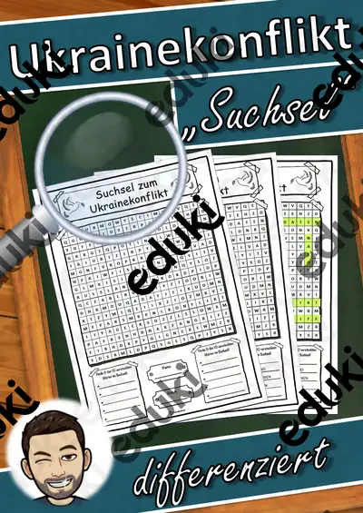

Warum gibt es Kriege? - Homeschooling
Mit diesem Material erhalten Sie ein Arbeitsblatt, geeignet zur Heimarbeit, Homeschooling, Schulschließung zum Thema: "Warum gibt es Kriege?" inkl. Lösung. Warum gibt es eigentlich immer wieder Kämpfe und Gewalt? Dieses Arbeitsblatt (auch geeignet für die Heimarbeit und zum Homeschooling während der Schulschließungen auf Grund des Coronavirus) klärt mit Hilfe eines Videos diese Frage.
FachSport
KlasseKl. 6–7
SchulformSek I Mittlere Schulform
MaterialartUnterrichtsreihen, Arbeitsblätter, Stationenlernen, Fördermaterial/Inklusion
Ähnliche Materialien

Krieg Lückentext mit Wortspeicher Hörverstehen und Suchsel

Flache Werkstücke - Abschrägung (auch Homeschooling) inkl. Video

Siebenjähriger Krieg Lückentext mit Wortspeicher Hörverstehen und Suchsel

Dreißigjähriger Krieg Lückentext mit Wortspeicher Hörverstehen und Suchsel

Kalter Krieg Lückentext mit Wortspeicher Hörverstehen und Suchsel

Russisch-Ukrainischer Krieg Lückentext mit Wortspeicher Hörverstehen und Suchsel

Lesespur: Der Hungerwinter 1947: Leben nach dem Krieg – Lesespurgeschichte mit Rätseln (Klasse 9)
